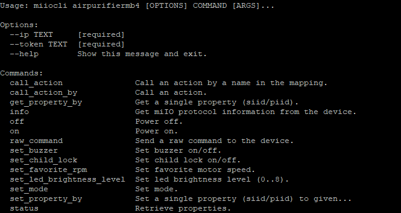
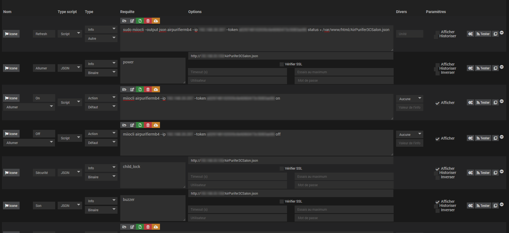
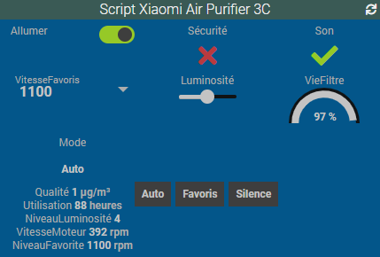

The Xiaomi air purifier is a wifi device and to be able to use it in Jeedom you'll need to extract its token.
It's possible to extract the token by using an old version of the Mi-Home app or using various strange manipulations.
For me it never worked and by chance I found the Xiaomi Cloud tokens extractor.
Before to use it, you need to add your purifier in the Mi-Home app and then you can execute the "token_extractor.exe".
The tool will ask you to enter your Mi-Home login, your password and the server to use. The last information isn't mandatory and if omitted the tool will scan all countries and will list different information about your devices.
For the purifier we just need to get the token.
As I've the Xiaomi Home plugin in Jeedom I thought it would be easy to add my new toy but it never worked (the information returned by the commands were always empty).
After a few searches, I found the miiocli tool that can be installed on your Jeedom host (you'll be able to see a list of compatible devices on the Github page).
First connect via SSH to your Jeedom host and execute the following command to install the JQ tool (used to manipulate JSON structure)
sudo apt-get install jq -y
Then you can install the miiocli tool:
sudo apt-get install libffi-dev libssl-dev -y
sudo pip3 install python-miio
To be able to see what you can do with the Air Purifier 3C, you can the help command result and it will describe the options and commands you can use:
sudo miiocli airpurifiermb4 --ip [YourPurifierIP] --token [YourPurifierToken] --help
The parameter "airpurifiermb4" is the device type to use with the command and is linked to the Xiaomi Air Purifier 3C.
When you validate the previous command, you'll see all the commands available to control your purifier.

In the following screenshot, I added a new script in Jeedom to be able to control my device.

The first command is used to get a json with all the information from the purifier (power, air quality, ...) and then I save it in a file on my server (don't forget to set the IP of your purifier and its token).
The second command is used to query the json file and get the power value (here the IP enter the IP of your Jeedom host).
The third command is used to power on the purifier and so on...
As you understood the sample, you'll be able to add more commands to get the rest of the information and with a few click you'll have a widget to control your device and I'm sure most of you will have a better design.

comments powered by Disqus